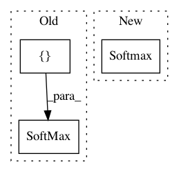

ef3c40a4542966e2dac08cc51710ddedc31fd2d9,deepchem/models/tensorgraph/progressive_multitask.py,ProgressiveMultitaskClassifier,create_output,#ProgressiveMultitaskClassifier#Any#,350
Before Change
return weighted_loss
def create_output(self, layer):
output = SoftMax(in_layers=[layer])
return output
After Change
return SparseSoftmaxCrossEntropy()
def create_output(self, layer):
return Softmax()(layer)
class TaskLoss(_StandardLoss):
In pattern: SUPERPATTERN
Frequency: 3
Non-data size: 3
Instances
Project Name: deepchem/deepchem
Commit Name: ef3c40a4542966e2dac08cc51710ddedc31fd2d9
Time: 2019-06-10
Author: peastman@stanford.edu
File Name: deepchem/models/tensorgraph/progressive_multitask.py
Class Name: ProgressiveMultitaskClassifier
Method Name: create_output
Project Name: deepchem/deepchem
Commit Name: cb4ea667b426ebc6595cc0e8be81c94955266c9c
Time: 2020-03-05
Author: peastman@stanford.edu
File Name: deepchem/utils/test/test_generator_evaluator.py
Class Name: TestGeneratorEvaluator
Method Name: test_compute_model_performance_multitask_classifier
Project Name: deepchem/deepchem
Commit Name: cb4ea667b426ebc6595cc0e8be81c94955266c9c
Time: 2020-03-05
Author: peastman@stanford.edu
File Name: deepchem/utils/test/test_generator_evaluator.py
Class Name: TestGeneratorEvaluator
Method Name: test_compute_model_performance_singletask_classifier